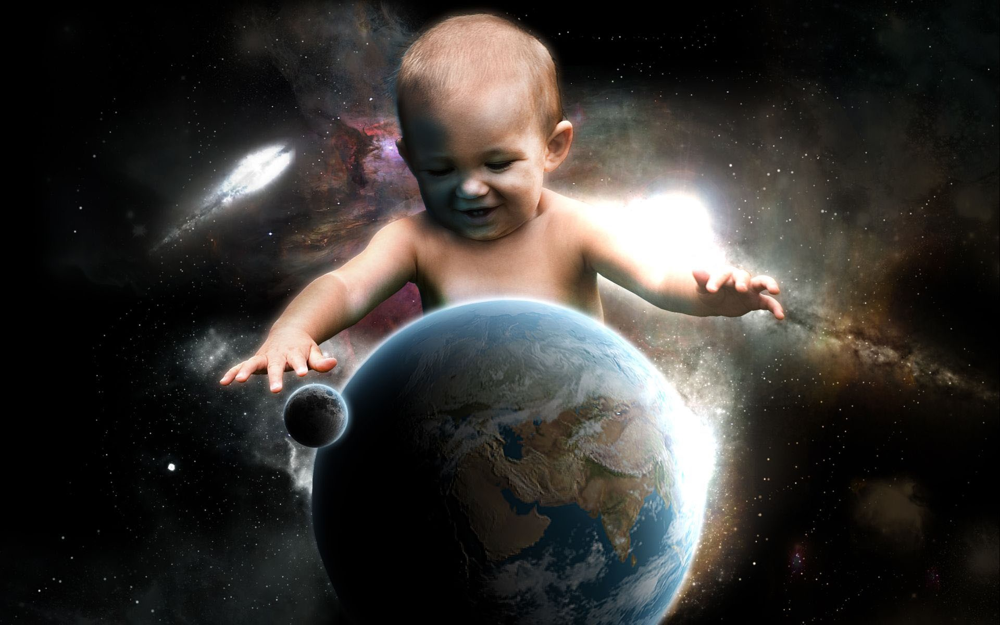

Колонизация планет Cолнечной системы и их спутников
Плюсы и минусы
Плюсы и минусы
Актуальность
- Население Земли постоянно растет, а ресурсы нашей планеты ограничены. Тем более, человечество постоянно развивается, а используются допотопные ресурсы: нефть, уголь, — которые возникли от останков древних животных и растений. Использование же не сможет постоянно восполнять растущие потребности населения Земли.
- Человечество постоянно загрязняет свою планету, что приведет к .
Цели и задачи:
- Изучить возможность колонизации планет Солнечной системы и их спутников.
- Выявить плюсы и минусы такой колонизации.
- Посмотреть способы осуществления колонизации.
- Оценить возможность колонизации в настоящее время.
Выводы и итоги:
Колонизация Солнечной системы — гипотетическое создание автономных человеческих поселений вне Земли.- Колонизация увеличивает вероятность, что человечество сохранится при глобальных земных катастрофах, тем самым получается, как бы создание резервной копии человечества в космическом пространстве.
- Колонизация космоса является одной из основных тем научной фантастики. При этом, учитывая, что множество идей научной фантастики прошлого века уже сбылись в нынешнем, является не такой уж и фантастичной.
- Достижения современной науки уже позволяют человечеству разрабатывать и изучать оптимизированные варианты и комбинации роботов-строителей с применением нейросети, сходной с мозгом пчёл и оснащённых технологиями 3D-печати, запрограммированные как на печать гигантских космических конструкций, так и на воспроизводство деталей для собственной сборки, починки. А также запрограммированные для сборки роботов иного типа: для добычи, доставки и одновременной переработки полезных ископаемых с небольших космических тел (Промышленное освоение астероидов), для подготовки и обработки материалов, для выращивания еды жителям, для централизованного автоматизированного сбора различных видов энергии.

Солнечная система